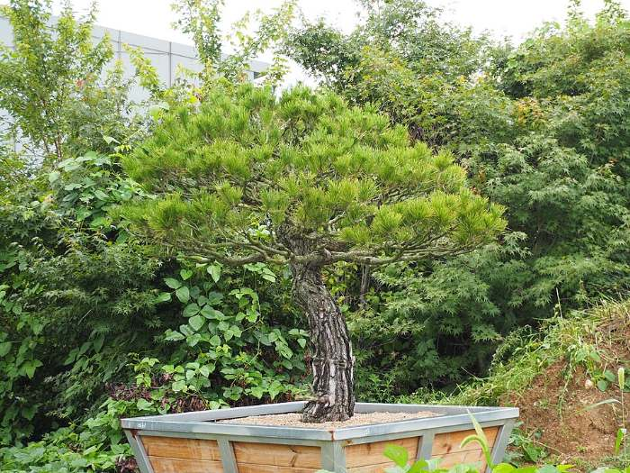
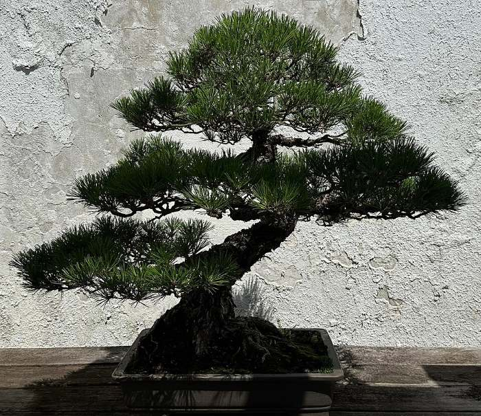
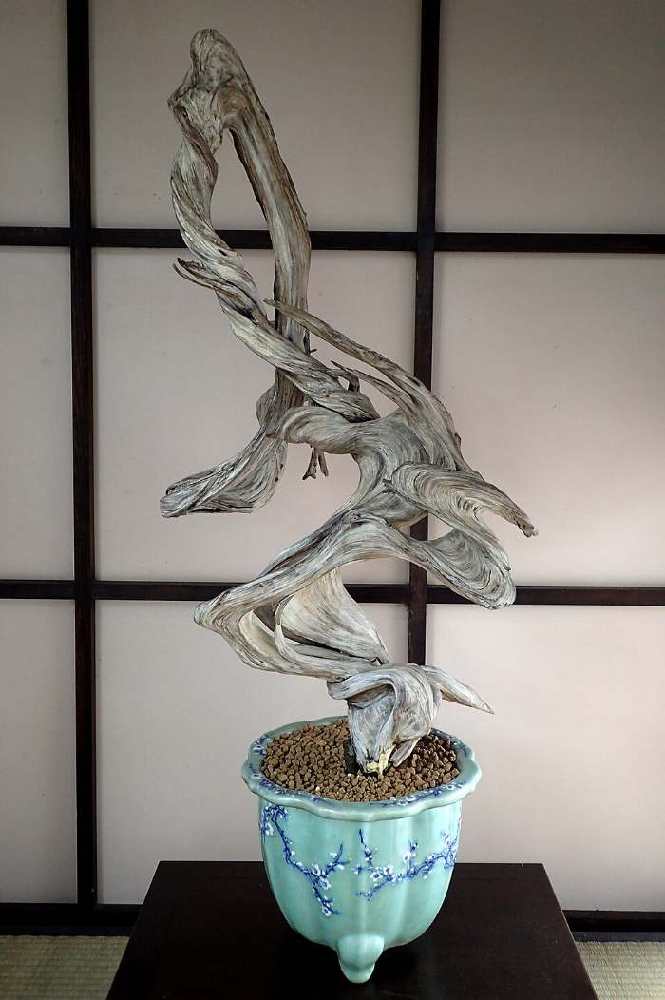
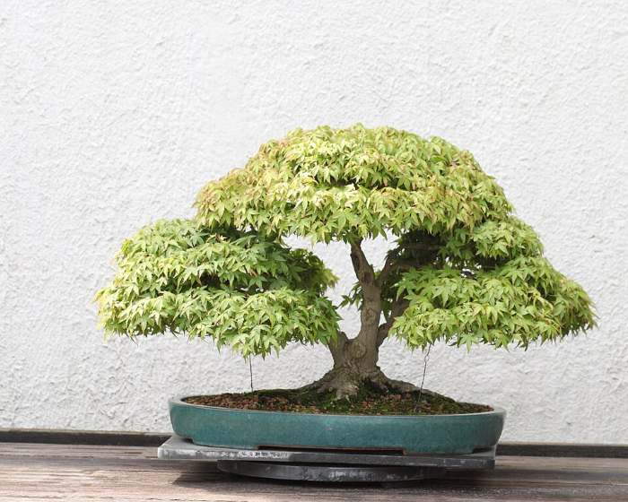

10월
18
작업 · 이키본철사걸이 완료 · 작업 사진 도착
위쪽 가지 세 개를 오른쪽으로 살짝 내렸어요. 알루미늄 2.5mm 사용. 철사는 2027년 6월 중순에 풀어야 가지에 자국이 안 남아요. 시기 되면 알림톡 드릴게요. — 장인 박○○

좋아요 14 · 댓글 3 · 커뮤니티에 공유됨



위쪽 가지 세 개를 오른쪽으로 살짝 내렸어요. 알루미늄 2.5mm 사용. 철사는 2027년 6월 중순에 풀어야 가지에 자국이 안 남아요. 시기 되면 알림톡 드릴게요. — 장인 박○○

철사걸이 작업이 10월 20일 시작돼요. 완료 후 10월 27일(월) 발송 예정.
입양 전 기록이에요. 마지막 분갈이 2024년 3월, 마지막 순 자르기 2026년 6월.